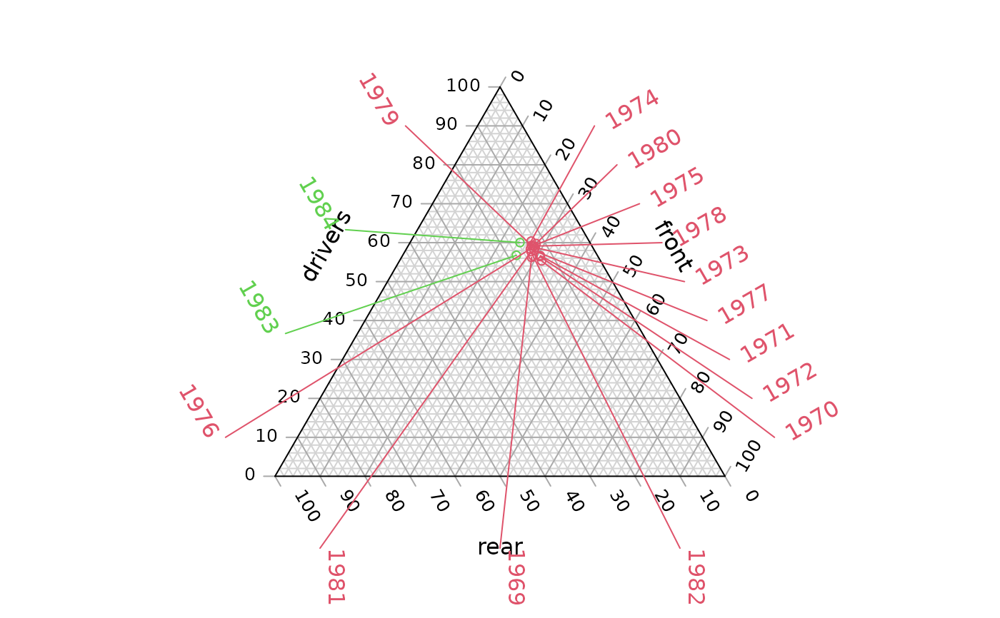

Annotate() identifies and label individual points on a ternary diagram
in the plot margins.
Arguments
- coordinates
A list, matrix, data.frame or vector in which each element (or row) specifies the three coordinates of a point in ternary space. Each element (or row) will be rescaled such that its entries sum to 100.
- labels
Character vector specifying text with which to annotate each entry in
coordinates.- side
Optional vector specifying which side of the ternary plot each point should be labelled on, using the notation
"a", "b", "c"or1, 2, 3. Entries of"n"or0will not be annotated (but still require an entry inlabels). Entries ofNAwill be allocated a side automatically, based on the midpoint ofcoordinates.- outset
Numeric specifying distance from plot margins to labels.
- line.col, lty, lwd
parameters to
segments().- col, font, offset
parameters to
text().- ...
Further parameters to
text()andsegments().
See also
Annotation vignette gives further suggestions for manual annotation.
Examples
# Load some data
data("Seatbelts")
seats <- c("drivers", "front", "rear")
seat <- Seatbelts[month.abb %in% "Oct", seats]
law <- Seatbelts[month.abb %in% "Oct", "law"]
# Set up plot
oPar <- par(mar = c(2, 0, 0, 0))
TernaryPlot(alab = seats[1], blab = seats[2], clab = seats[3])
TernaryPoints(seat, cex = 0.8, col = 2 + law)
# Annotate points by year
Annotate(seat, labels = 1969:1984, col = 2 + law)

# Restore original graphical parameters
par(oPar)